Getting started with R
Cirad - UnB
2025-04-08
R and RStudio
Let’s open R
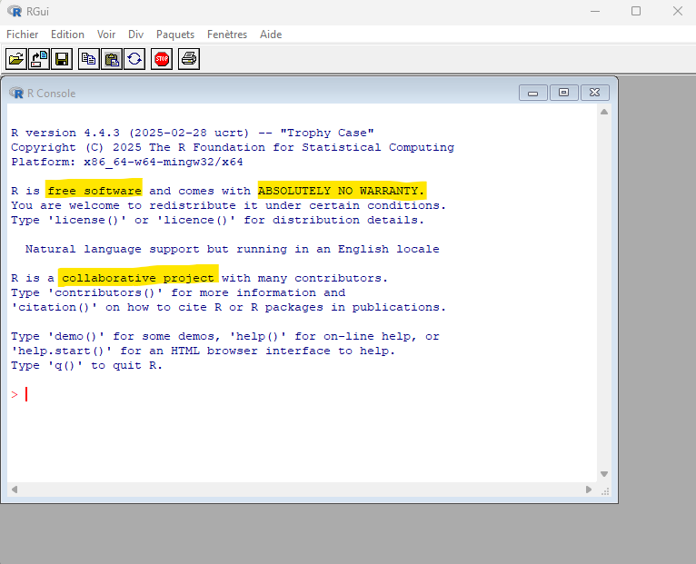
What is R?
R is a programming language for processing and analysing quantitative data. It is derived from the programming language S.
R is free and Open Source: it is can be used, modified and distributed freely.
R is collaborative: it is developed by its users.
R is multi-plateform: it works on Windows, Linux and Mac.
What does R do?
R allows to:
manipulate data
draw graphs
perform statistical analyses
and many other things…

Why use R?
It has many functionnalities that are constantly evolving, thanks to its community of users.
It is widely used by the scientific community.
A lot of help is available, in many languages.
Is it difficult?
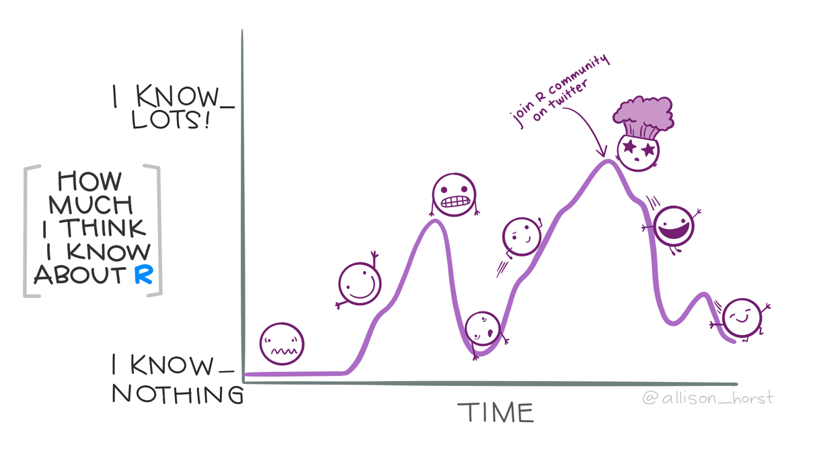Let’s open RStudio
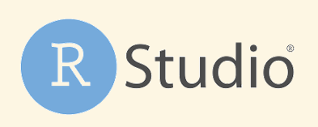
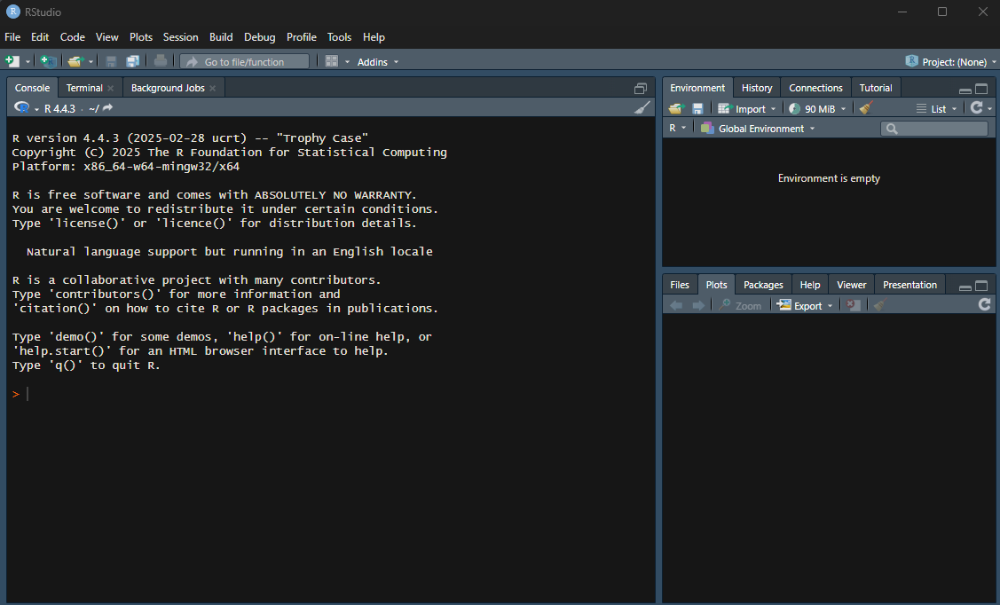
=> RStudio opens R.
What is RStudio?
RStudio is an Integrated Development Environment (IDE): a software that provides many facilities to help programming with R.
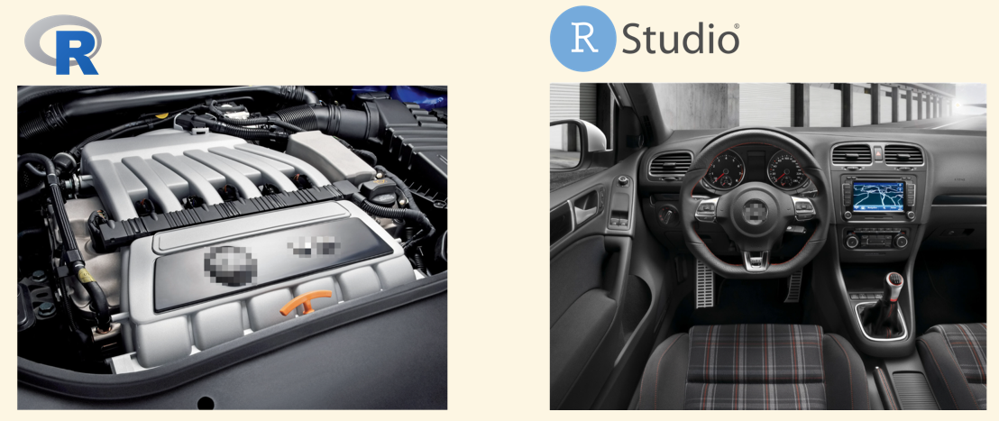The console and the prompt
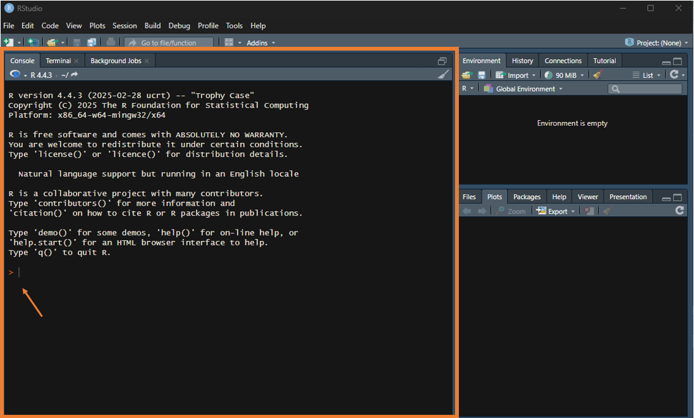The prompt is indicating that R is waiting for our instruction.
Let’s try some basic commands!
Write an operation in the console and click Enter.
[1] 5Let’s try some basic commands!
[1] 14Spaces are not important.
Command history
The previous commands are visible in the command history.
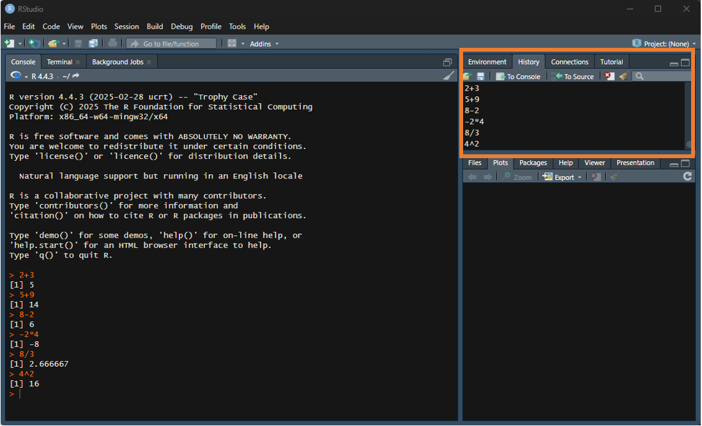You can run them again by double-clicking on them or clicking on To Console. But in practice, we will not use this much…
You can also use the ⬆️ or ⬇️ keys of the keyboard to navigate the command history in the console.
Let’s try some more commands…
Warning in log(-1): NaNs produced[1] NaNNAN means “not a number”.
Let’s try some more commands…
This is an unfinished command. We can finish after the +. 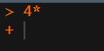
Or press Esc to terminate the command line.
Let’s try some more commands…
We get an error message. Why?
R doesn’t know what is x.
Objects
Basic objects
Let’s put something in x
x is an object. We assign it the value of 5, using the assignment operator <-
⚠️ The content of x is not printed. But we can see it by typing its name in the console.
And we can use it in other commands.
Where are the objects stored?
Objects are store in the environment

⚠️ They are kept in memory throughout the session but are not saved when RStudio is closed.
Where are the objects stored?
You can see the content of the environment with the function ls
You can remove an object from the environment using the function rm
⚠️ Typing rm() or using the 🧹symbol in the environment windows clears all the environment!
Assigning a new value to an existing object
[1] 3Assigning a new value to an object replaces the previous value (as you can see in the environment). ⚠️ Don’t give the same name to several objects!
Objects are not linked
Modifying x does not modify y.
Creating more objects
The new object result is stored in the environment. It is not printed.
We can name objects the way we want but…🤔
… calling them result, result2, result3 is not explicit enought!
Naming an object
Some good practices when naming an object:
- Use explicit names while trying to keep names short
- Object names can contain letter, numbers, the symbols ., - and _
- Object names cannot start with a number
🤔 What does the error message mean?
Naming an object
Some good practices when naming an object:
- Object names cannot contain a space
🤔 What do the error messages mean?
- Avoid accents (for encoding problems)
Naming an object
Some good practices when naming an object:
- The case matters (upper and lower cases are not the same)
Naming an object
Adopt a consistent naming style
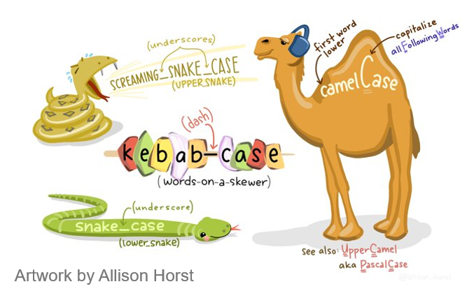Objects are not necessarly numbers
What if we write some text in an object?
[1] "Ola!"🤔 Why do we need the ” ” ?
🤔 What does the error message mean?
Mode of an object
Object can have different types.
The type of an object is called the mode.
We can use the function mode to check what is the mode of an object:
Mode of an object
Here are the main modes you will use:
| Mode | What | Example |
|---|---|---|
| numeric | real number | 2.3 |
| character | character string | “hello” |
| logical | bolean (true/false) | true |
Mode of an object
🤔 What is a boolean?
Numeric
Object of mode numeric can be:
- double: for any real number
- integer
Numeric
What happens if we try to put a decimal number as a numeric?
We get a warning message. What does it mean?
Check the type of an object
[1] TRUE🤔 Why?
Change the type of an object
We can change the type of an object.
Check and change the type of an object
See also
is.numeric and as.numeric
is.integer and as.integer
is.double and as.double
is.character and as.character
is.logical and as.logical
…
Let’s play a bit!
🤔
All good?
You’ve done your first steps with R!
Parabéns 🎉
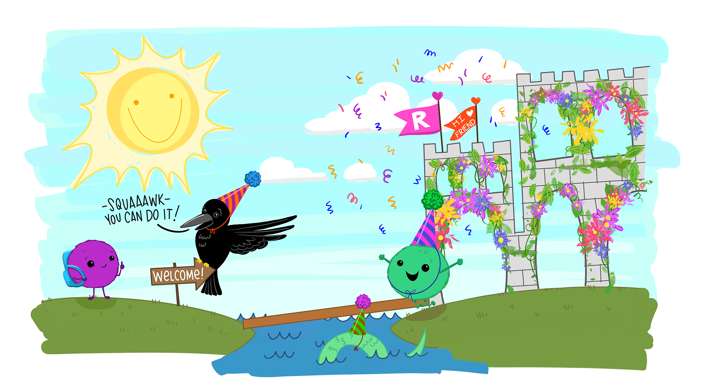R scripts
Before going further with our exploration of R, let’s get organised!
🤔 Where are the object stored ? and the commands ?
What happens when we close and restart a R session?
We need need to save our work!
Script
What is a script?
A script is a text file in which can can write and organise all the commands of a workflow.
This is the core of our work.
Saving all the commands in a script is what makes our work reproductible.
Let’s create a new script
In RStudio, click on File > New file > R script
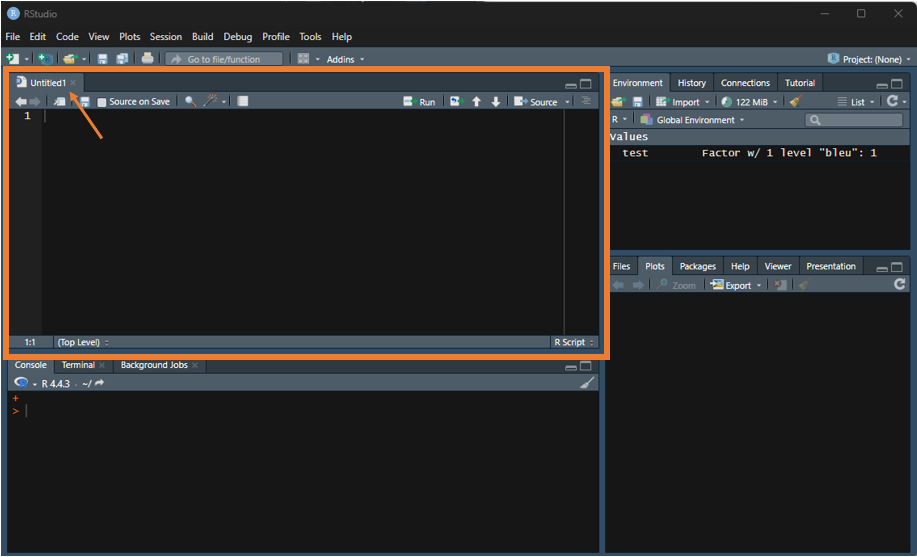This opens a new pane in RStudio, this is the text editor where we can write the script.
Adding a command in a script and running it
Let’s write a command in the script.
To run it, select it and click on Run.
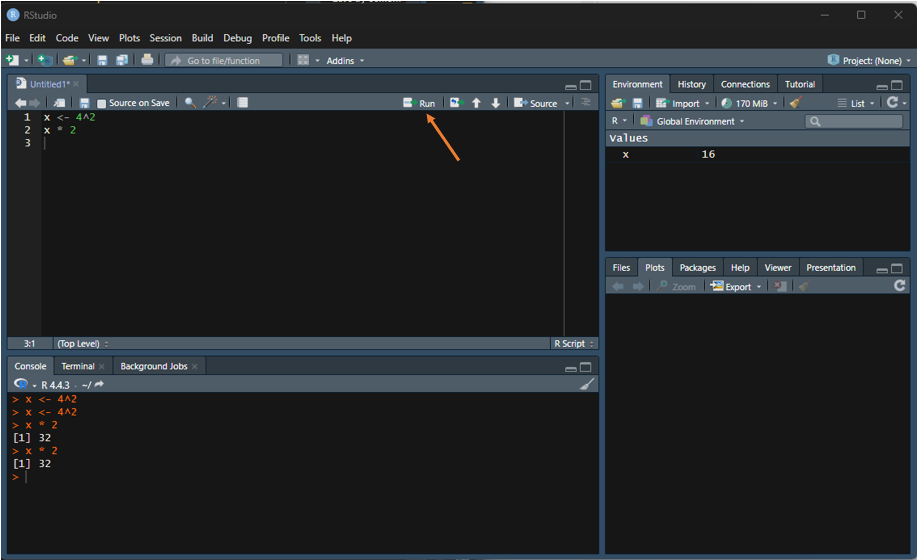💡 You can also use the keyboard shortcut Ctrl + Enter.
You can select only one command or a group of commands.
Commenting a script
It is very important to document your script by commenting it. Remember?
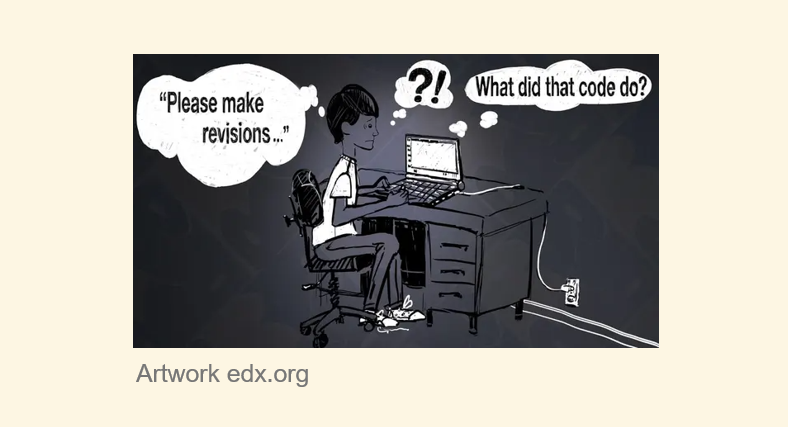Comment your code abundantly! Choose the language well.
Commenting a script
To comment a script use one or several #.
R will ignore everything that comes after, until the end of the line.
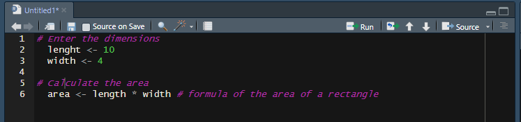You can comment before or at the end of a line.
Organising a script
A script should include:
a header: title, date, author
a description of what the script does
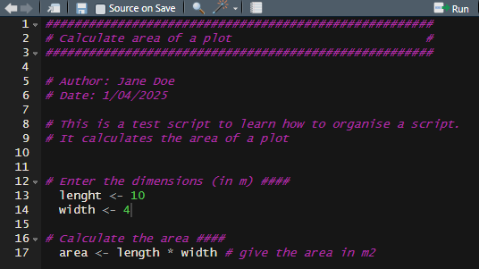
an outline
several sections (blocks of code)
💡 Use blank lines and indents to organise your script
Blocks of code
Adding #### (4 or more) or several —-at the end of a line, create a block of code.
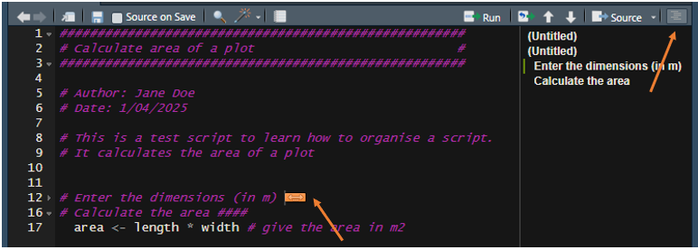You can fold/unfold a block of code by clicking on the grey arrow.
And you can see an overview of the script by clicking on Outline.
Colours in a script
Colours in a R script help you distinguish comments, numeric values, character strings, functions…
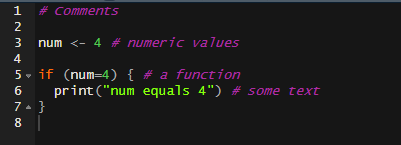💡 You can change the color theme in Tools > Global options > Appearance.
Save and open a script
When there are unsaved changes in a script, it appears in blue
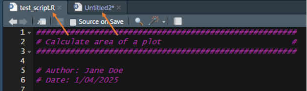To save a script, go to File > Save or File > Save As…. 💡 You can also use the shortcut Ctrl + S or click on 💾.
To open an existing script, go File > Open file….💡 You can also use the short cut Ctrl + O or click on 📂.
R file
The script is saved as an .R file:
.R files are recognised as R script by RStudio, which allows using the syntax colour code, and running the code directly.